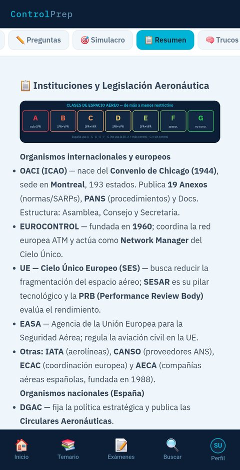
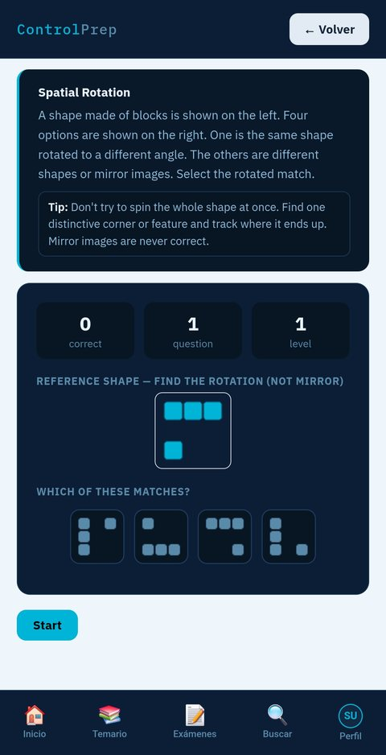
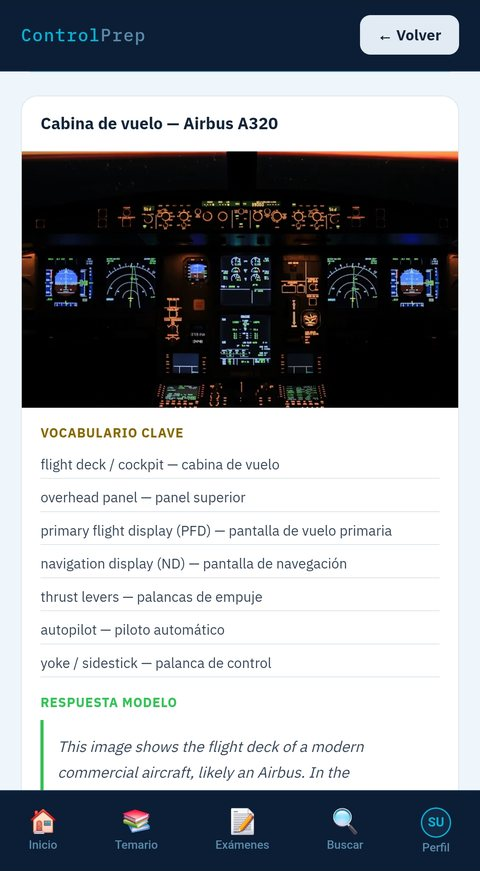
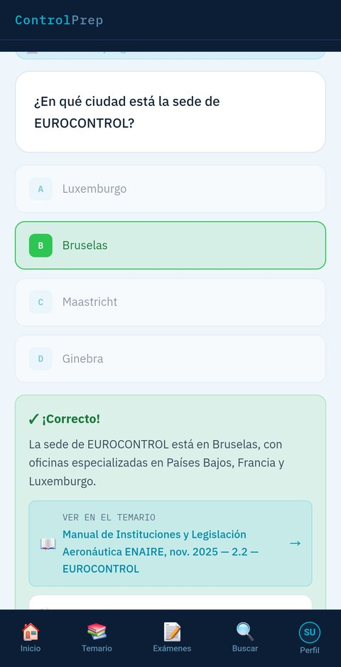

![ControlPrep]()
Todo lo que necesitas para aprobar tus oposiciones de controlador, en la palma de tu mano
Temario oficial · Preguntas de práctica · Simulacros cronometrados · Psicotécnicos · Inglés C1 · Plazas limitadas. ¿Una será tuya?
Temario, simulacros, inglés avanzado y psicotécnicos en una sola app. Descubre en 10 minutos si estás al nivel del proceso de selección de ENAIRE.
Sabemos exactamente lo que exige el proceso de selección de ENAIRE, porque lo hemos vivido. Por eso creamos ControlPrep: para darte la preparación completa, exigente y honesta que nos habría gustado tener. Si de verdad quieres tu plaza, este es tu sitio — y el primer paso es tuyo.
Cada parte está pensada por quienes han pasado por la selección, no por una editorial genérica.
Temario y preguntas basados en las fuentes oficiales de ENAIRE, no en material de terceros sin contrastar.
Quienes ya han superado el proceso saben qué se pregunta y cómo. Esa experiencia está en cada tema.
Temario, simulacros, inglés avanzado y psicotécnicos. Sin saltar entre webs, apps y PDFs.

Cada tema condensado con diagramas y reglas mnemotécnicas para memorizar de verdad.

Memoria, atención dividida, razonamiento espacial y más — la parte que más sorprende en la selección.

Prepárate para la prueba de inglés de la selección, a nivel avanzado — con algún escenario de aviación de propina.

Practica en condiciones reales de examen, con repetición espaciada de tus errores.
Haz el test de nivel gratuito y descubre exactamente dónde estás hoy.
Empezar test de nivel →
Temario oficial · Preguntas de práctica · Simulacros cronometrados · Psicotécnicos · Inglés C1 · Plazas limitadas. ¿Una será tuya?
Selecciona un tema para estudiar y practicar
Preguntas representativas basadas en convocatorias anteriores · ControlPrep no está afiliado con ENAIRE